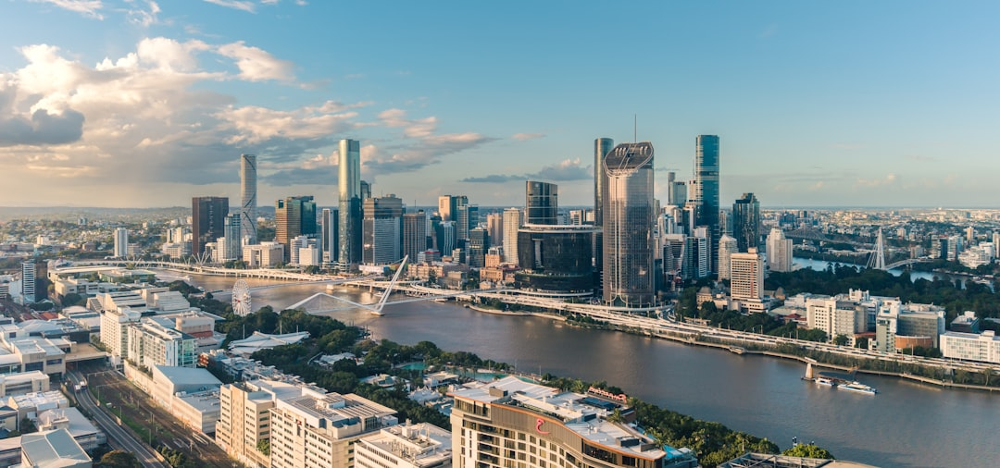

For Brisbane businesses planning a new website, the source page sets a practical range of about $2,500 to $7,500 for a small business brochure site, about $7,500 to $15,000 for a more polished lead-focused build, and higher again for eCommerce or heavily custom work. Typical timing runs about 4 to 10 weeks for a simple brochure site, 6 to 10 weeks for a WordPress or small business build, and from about 12 weeks to several months for eCommerce or custom work.
For Brisbane businesses comparing web design brisbane options, the practical choice usually comes down to scope, budget, platform control and how quickly you can return content and feedback.
Web Design Brisbane Explained
If you are weighing up a new site, the most useful starting point is scope. Web Design Brisbane Australia frames the decision around what the site needs to do, not just what it is built on. The source page lists custom builds, small business websites, WordPress sites, eCommerce stores, redesigns, landing pages, SEO-friendly builds, and ongoing care, which is a reminder that a brochure site, a lead-generation page and an online store are different jobs with different budgets and timelines.
That matters because the same page also gives indicative pricing up front. A basic brochure site sits in one band, a more polished lead-focused build sits higher, and eCommerce or heavily custom work starts above that again. If you ask for a quote before you define the outcome, you risk comparing numbers that cover completely different deliverables.
- Clarify whether you need a custom, WordPress or eCommerce build.
- Decide if the project is a fresh build, a redesign or a campaign landing page.
- List the actions the site must drive, such as enquiries, product sales or lead capture.
What the price ranges actually suggest
The published ranges are most useful as a scope filter. The source page says a small business brochure website in Brisbane commonly runs from about $2,500 to $7,500. A more polished, lead-focused build sits closer to $7,500 to $15,000. eCommerce and heavily custom work start higher. That does not give you a final quote, but it does help you separate a simple informational site from a build that needs stronger conversion planning, more custom design work or store functionality.
A sensible next question is what is included in your brief. If the project needs editable pages, platform training, a redesign that protects existing rankings, or a campaign landing page tied to Google Ads, the working scope changes. The source page also points to a website cost estimator and a staged process, which suggests the early pricing conversation should be tied to project details rather than a generic package label.
Timing depends on content and feedback
Timing on the source page is broken down clearly. A simple brochure site is commonly around 4 to 10 weeks. A WordPress or small business site is commonly around 6 to 10 weeks. An eCommerce or custom build runs from about 12 weeks up to several months. The same page says timelines depend most on how quickly content and feedback come back, which is one of the more useful planning details on the page.
For a Brisbane business, that means internal readiness can matter as much as the build itself. Before you enquire, check who will approve copy, who will supply images, and how fast revisions can be turned around. If you already have an ageing site, also ask how a redesign will handle pages that are already ranking, because the source page specifically positions redesign work around modernising an underperforming website without losing existing search rankings.
Who this applies to
This is most relevant for Brisbane SMEs and sole traders choosing between a practical small business site, a WordPress build they can update themselves, a custom website built around a defined audience, or an online store on Shopify or WooCommerce. It also applies to businesses planning a redesign, a high-converting landing page for Google Ads, or a site intended to launch on solid SEO foundations.
The source page makes two ownership points worth checking in any discovery call. First, the website and domain stay yours. Second, editable platforms such as WordPress can be set up so you or your team can change text, images and pages without a developer on call. If you would rather not handle updates, the same page says a care plan can cover changes, along with updates, backups, security and support after launch.
Questions worth asking before you enquire
The local value described on the source page is not just geography, it is fit. It says a Brisbane team understands the market you actually sell to and is contactable in your own time zone. It also says the work is mobile-first, fast, well structured and built on solid SEO foundations so the site is ready to rank, while making clear that ongoing ranking results still depend on competition and content and that no honest provider can guarantee a specific position.
That makes the best pre-enquiry checklist fairly simple.
- Ask which build type best matches your business goals and budget.
- Ask what content, feedback and approvals you need to provide to stay on schedule.
- Ask how the site will be structured for fast load times, clean markup and sensible on-page SEO.
- Ask whether you will update the site yourself or need a maintenance arrangement after launch.
- Define the job. Write down whether you need a brochure site, WordPress build, eCommerce store, redesign or landing page before asking for pricing.
- Match budget to scope. Use the published price bands as a starting point so you compare projects with similar requirements.
- Check internal readiness. Confirm who will supply content and sign off feedback because the source page says timelines depend most on that response speed.
- Confirm ownership and updates. Ask whether the site will be editable by your team and whether you want a care plan for ongoing changes.
| Project type | Indicative cost | Typical timing |
|---|---|---|
| Small business brochure website | About $2,500 to $7,500 | About 4 to 10 weeks |
| Lead-focused build | About $7,500 to $15,000 | Varies by scope |
| eCommerce or custom build | Starts higher | About 12 weeks to several months |
Common questions
How much does a Brisbane business website usually cost? The source page says a small business brochure website in Brisbane commonly runs from about $2,500 to $7,500, while a more polished lead-focused build sits closer to $7,500 to $15,000. It also says eCommerce and heavily custom work start higher.
How long does a new site usually take? The published timing is about 4 to 10 weeks for a simple brochure site, about 6 to 10 weeks for a WordPress or small business site, and from about 12 weeks to several months for eCommerce or custom work. The page says content and feedback speed are the main timing variable.
Will a new site help with Google rankings? The source page says a well-built site helps by using clean markup, fast load times and sensible on-page SEO so the site is ready to rank. It also says ongoing ranking results depend on competition and content, and that no one can honestly guarantee a specific position.
Can my team update the website after launch? Yes, according to the source page, editable platforms like WordPress can be set up so you can change text, images and pages without a developer. If you do not want to manage updates yourself, the same page says a care plan can cover ongoing changes.
This guide covers Brisbane website scope, indicative pricing, build timing, platform control and pre-enquiry questions.